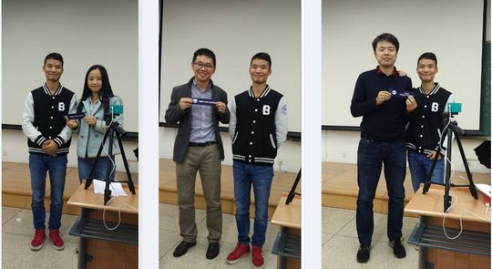
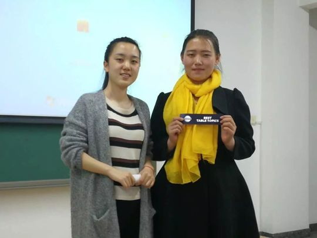

M
Milton
一位见微知著、热爱即兴主持的计算机博士，从腼腆的破冰者成长为俱乐部最活跃的"摆渡人"。
会员活跃 2016–2017出现 15 次 · 15 篇5 场演讲
Milton是北航Toastmasters里一位带着学者气质的成员，攻读计算机科学博士。他最早出现在2016年秋天的会议上，那时还只是即兴演讲台上的常客——介绍家乡的风景，和主席Amy搭档演一段经典电影桥段。文中说他"有点害羞，却很爱头马"，这份内敛与热爱，几乎贯穿了他在俱乐部的整段旅程。
2016年12月，他登台完成了自己的破冰演讲CC1——一段自我介绍，让大家第一次真正认识这位"帅气又善良的计算机博士"。此后他的成长清晰可见：CC2《Ferryman（摆渡人）》里，他讲述祖父母、师长、朋友如何在人生困境中一次次把自己渡过去，并许愿有朝一日也能成为别人的摆渡人；CC4《Restart》则呼应他"总爱突破自身极限、在科研挑战中一次次重启"的性格。他还曾用中英文穿插的方式做演讲，从两会记者会的语言切入，谈中英文背后不同的文化内涵，被点评者评价"见微知著"。
进入2017年春天后，Milton愈发活跃，几乎成了俱乐部的"即兴主持专业户"——Plan your life、Root of exhaustion、Self-discipline、Ambition等多场会议的Table Topics Master都由他担纲，常以提问引导大家思考成功、自律与人生规划。他也参加了春季中文演讲比赛，借战国"范雎"的故事讲善恶只在一念之间。那场比赛里有个真实可爱的细节：他的演讲很长，"拒绝了计时官Joy的时间礼物"，没能控制在规定时间内——一个执着于表达、不愿被切断的学者形象跃然纸上。
性格上，他腼腆却笃定，思考深、视角独，喜欢从一个小切口谈出大道理；他对头马的投入与坚持，让他在并不算长的活跃期里，留下了破冰、备稿、即兴主持、中文比赛等多种身影。
里程碑
- 2016-10-26 初登即兴台 ↗在#156会议担任即兴演讲者，介绍家乡的一处美景。
- 2016-12-09 破冰首秀 CC1 ↗完成破冰演讲《Self-introduction》，正式开启备稿演讲之路。
- 2017-03-03 CC2《Ferryman》 ↗讲述生命中的摆渡人，许愿成为别人的摆渡人，情感真挚动人。
- 2017-03-17 春季中文比赛 ↗参加春季演讲比赛中文组，借范雎故事谈善恶一念之间。
- 2017-11-24 主持Ambition主题会议 ↗在#185会议担任即兴主持，号召大家点燃内心的渴望。
闯关之路 · Competent Communication
✓
CC1
破冰
✓
CC2
组织你的演讲
CC3
明确目标
✓
CC4
怎么说
CC5
肢体在说话
CC6
声音的变化
CC7
研究你的主题
CC8
善用视觉辅助
CC9
以理服人
CC10
激励听众
做过的演讲 · 5 场
破冰演讲，作自我介绍，让大家认识这位帅气善良、有点害羞却热爱头马的计算机博士。
讲述祖父母、师长、朋友如何在人生困境中一次次把他渡过去，并立志将来也成为别人的摆渡人。
春季中文比赛，借战国范雎的故事说明善恶只在一念之差，没有绝对的善与恶；演讲偏长未能控制时间。
从两会记者会切入，以中英文穿插的方式谈两种语言背后不同的文化内涵，欣赏语言与文化之美。
作为博士，他常爱突破自身极限；面对科研中的重重挑战，他选择直面、征服并重启人生新阶段。
担任过的会议角色
即兴主持TTM×5即兴演讲者×3
为俱乐部做的事
- 多次担任即兴演讲主持人（TTM），以提问引导大家思考成功、自律、人生规划与倦怠的根源
- 以即兴演讲者、与主席Amy搭档表演等方式活跃会议气氛
- 坚持完成CC1至CC4的备稿演讲，分享摆渡人、重启、中英文文化等富有思考的主题
- 参加春季中文演讲比赛，丰富俱乐部的中文演讲内容
头马里的人
同台搭档
Amy照片墙 · 时间线
共 21 帧，取自 TA 在场的会议。




完整足迹 · 15 次出现（点开，每条可跳转原文）
- 2016-10-26第156次 · 做即兴演讲，介绍家乡美景
- 2016-11-22第159次 · 与Amy搭档表演经典电影片段
- 2016-12-08第162次 · 预告将做CC1自我介绍破冰演讲
- 2017-03-03第165次 · 预告做CC2演讲Ferryman
- 2017-03-07第165次 · 做CC2演讲Ferryman分享摆渡人经历
- 2017-03-17第166次 · 中文演讲借范雎故事讲善恶一念之差，超时
- 2017-03-19第167次 · 即兴演讲扮演严厉老板要开除Gasby
- 2017-03-24第168次 · 预告做中英文的不同演讲
- 2017-03-28第168次 · 做中英文不同主题演讲(中文名王永光)
- 2017-04-06第169次 · 担任即兴演讲主持人
- 2017-04-08第169次 · 担任即兴演讲主持，引出生活规划主题
- 2017-06-08第176次 · 担任Table Topics Master,主持疲惫根源话题
- 2017-06-16第177次 · 做CC4备稿演讲《Restart》(计算机博士生)
- 2017-09-22第181次 · 担任Table Topics Master并就自律话题提问
- 2017-11-23第185次 · Ambition @Beihang TMC 185th Meeting@19:3
“He also hopes that he can become more excellent, mybe at some point he could become someone else's ferryman.”